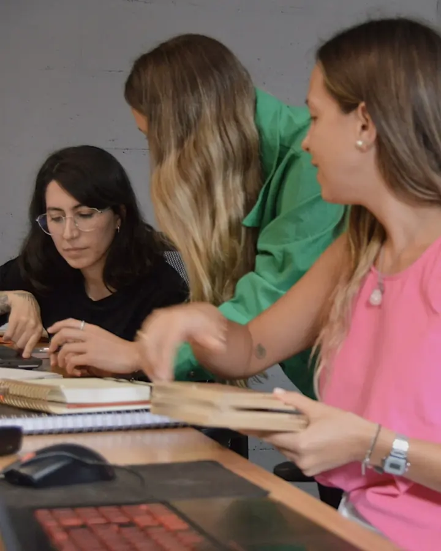
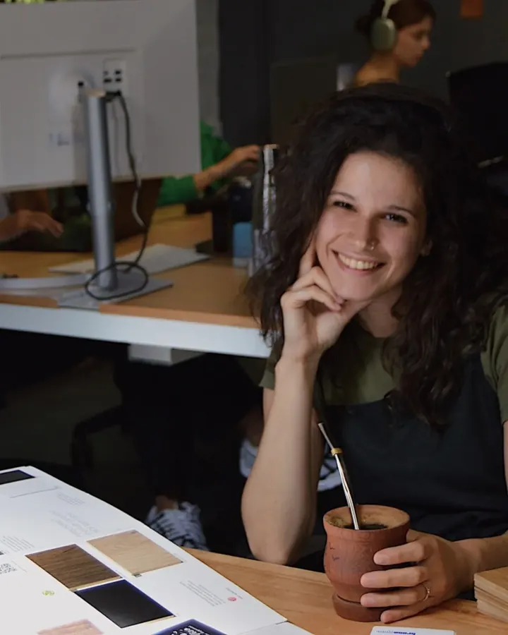
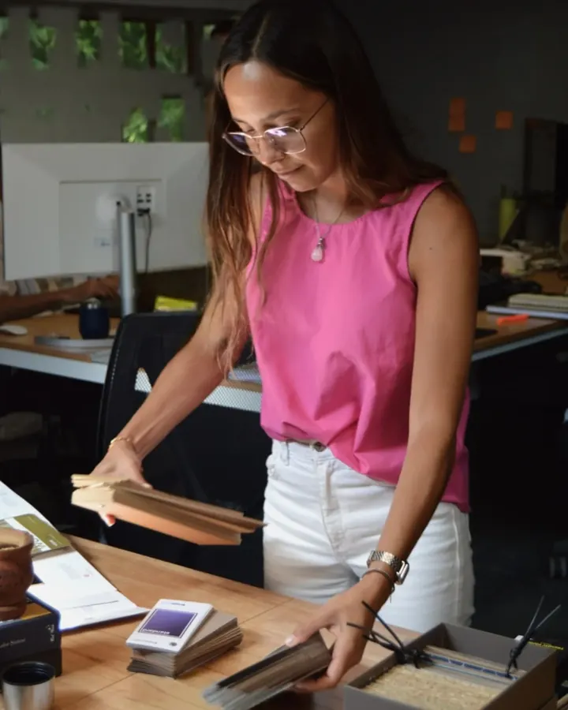
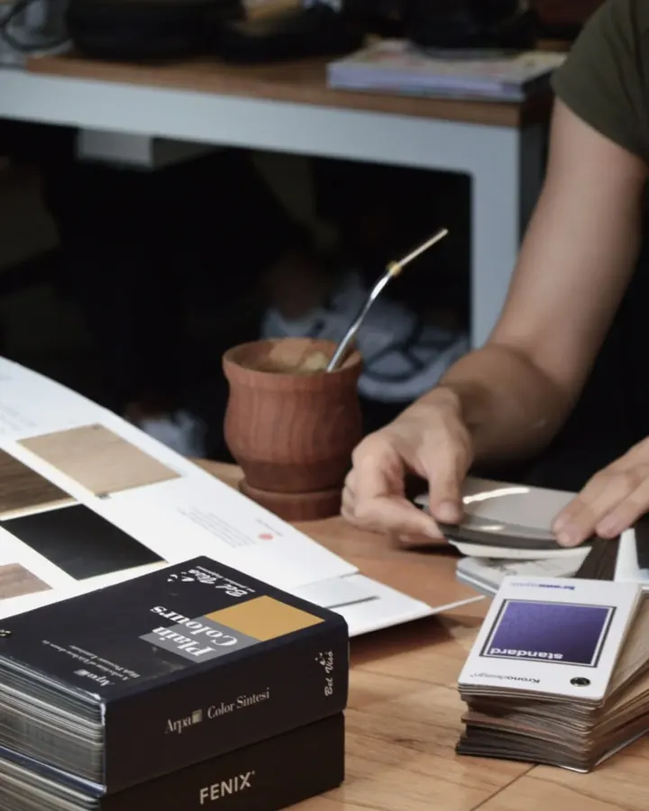
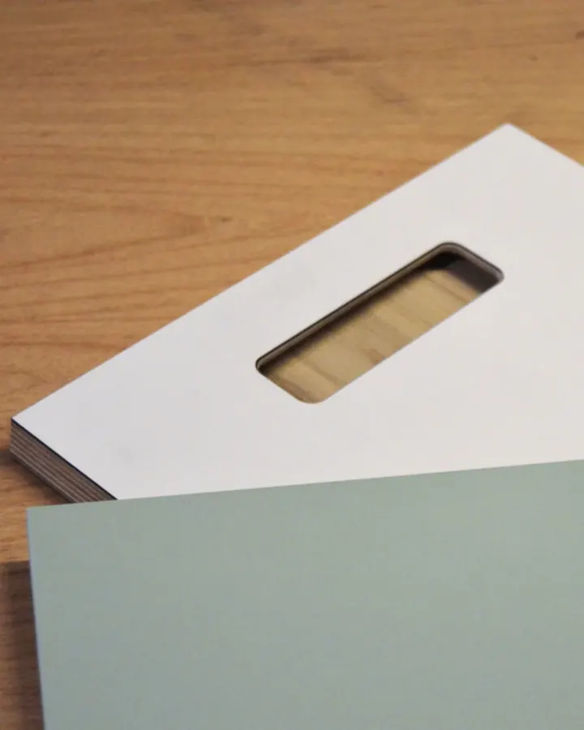

Help us become the kitchen brand people recommend.
Corner is a design-led kitchen and furniture studio. Our designers and project leads stay with every kitchen from the first sketch to the last panel going in, for homeowners in 12 US states and 5 European countries.
Open roles
2 open · remoteContent & Communications Lead
Own what every photoshoot becomes: press, Instagram, website pages and the material our designers sell with.
Kitchen Sales Designer
Own the client journey from first consultation to signed project, combining consultative sales with high-level kitchen design.
Brutally well made. Deeply calm.
Corner is a design-led furniture studio for people who want brutally well-made, deeply calm kitchens and a team that tells them the truth.
When clients reach out, they don’t get a showroom script. They meet the people in these photos: designers and project leads who stay with each kitchen and its joinery from the first sketch to the last panel going in. We built Corner because we wanted the kind of furniture brand we couldn’t find as clients ourselves: exceptional in craftsmanship and honest in how it works.
We design for real life at home. Nordic, Japandi, quietly minimal: soft forms, clean lines and materials meant to hold up for years. Every millimetre matters, from the way a drawer closes to how a rounded edge feels under your hand at 11pm.
The work is bigger than the furniture: budgets that make sense, timelines you can plan around, drawings that show exactly what will arrive on site. If something looks off, it’s flagged and redrawn. If a detail doesn’t earn its place, it goes.





What every role comes with
We hire people who think long-term, take ownership, and want to grow inside a fast-moving company. We value clarity, initiative, and the ability to move work forward without constant supervision.
We’re building the modern kitchen brand people recommend when someone asks, “Who can I trust with this?”
Exceptional in craftsmanship, transparent in pricing, and built for real homes, not just showrooms.